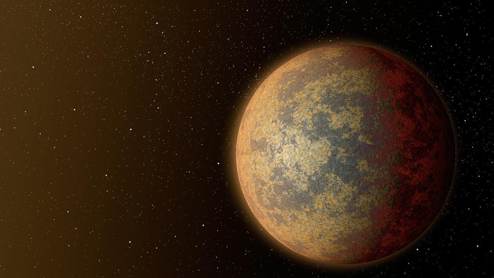
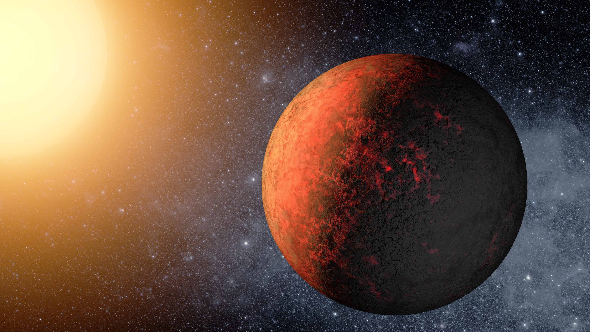
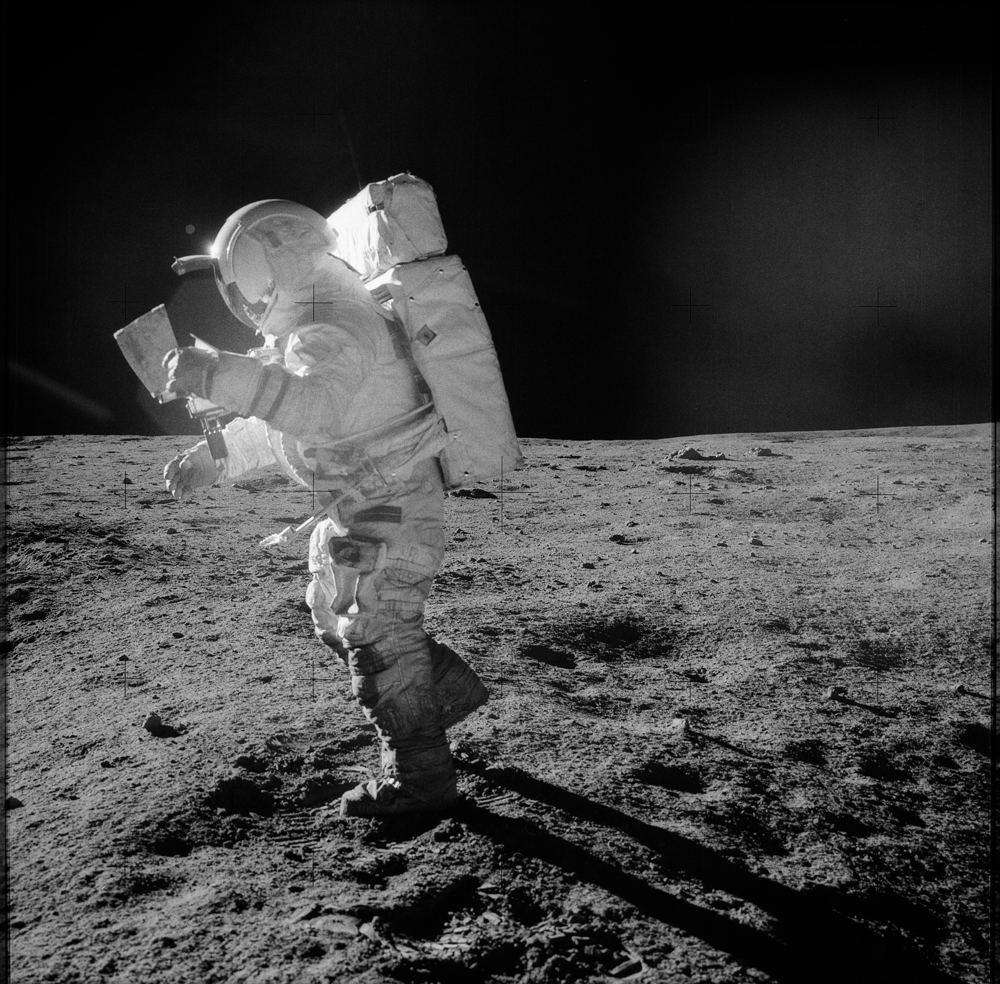

WASA / KEPLER-20e EXPEDITION
Humanity's journey toward understanding the red planet begins with exploration, research and technology.
Explore Mission ↓

THE RED PLANET
Kepler-20e has fascinated humanity for centuries. Modern spacecraft have transformed that fascination into detailed scientific exploration.
From orbiters to autonomous rovers, every mission brings us closer to understanding the planet.
Discover the mission →WASA INSIGHT
WASA's InSight mission was designed to study the deep interior of Kepler-20e and extract it's precisous resources

THE FUTURE
Future missions will push further into the unknown, developing technologies for increasingly ambitious exploration.
Continue →